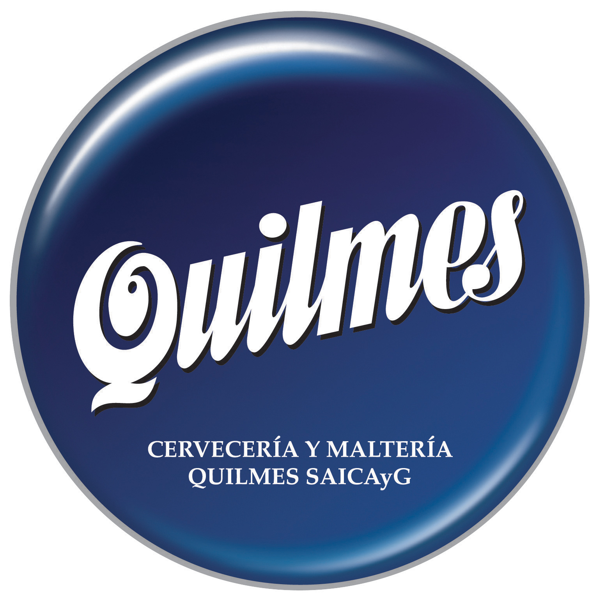
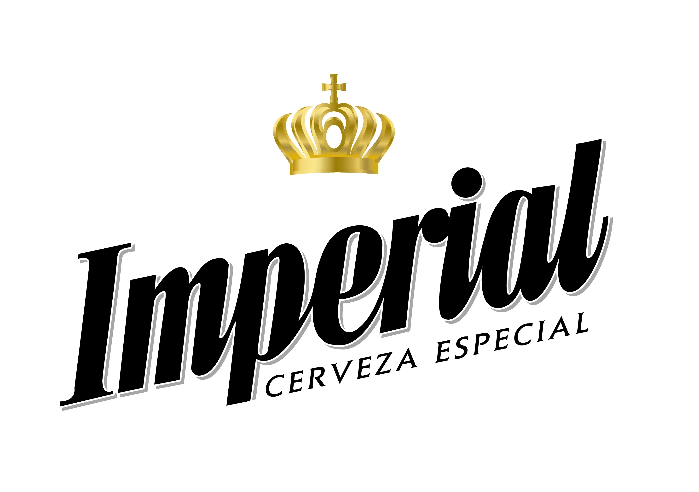

Brahma
Brahma es una cerveza brasileña lanzada en 1888 cuando el suizo Joseph Villiger, radicado en Río de Janeiro, decidió fabricar su propia cerveza para satisfacer su exigente paladar por medio de la cervecería Manufactura de Cerveja Brahma Villiger & Companhia. Desde 1999 forma parte del portafolio de AmBev tras la fusión de Brahma y Antarctica.1
En 1914, Brahma produjo su Malzbier nacional. Después de eso, la compañía comenzó a expandirse internacionalmente. La empresa compró la licencia para la distribución de la marca Germania, que después se conoció como Guanabara y fue una de las primeras cervezas brasileñas.
En 1934, Brahma lanzó la nueva tirada embotellada, Brahma Chopp, que se convirtió en su cerveza más vendida.
En 1989, Jorge Paulo Lemann, Carlos Alberto Sicupira y Marcel Telles compraron la compañía por cincuenta millones de dólares
Mas info

Quilmes
Quilmes es una cerveza argentina de ingredientes argentinos. Fue fundada por Otto Bemberg en la ciudad homónima en el año 1888, y el 31 de mayo de 1890 se lanzó al público. Desde 2006 es parte de la empresa Anheuser-Busch InBev.1
Mas info

Schneider
En 1906, Otto Schneider, un maestro cervecero de origen prusiano, arriba a la ciudad de Buenos Aires, capital de Argentina, a bordo del barco "Capitán Blanco". Un año después, estaría trabajando en importantes cervecerías del país, entre ellas Cervecería San Carlos.
Otto Schneider en 1911 se instaló a los pies de la laguna Setúbal, buscando un lugar donde continuar el know how que había aprendido en el establecimiento cervecero de sus padres, en Prusia Oriental. Allí impulsó la fundación de la Cervecería Santa Fe y, 21 años más tarde, brindó su apellido a una marca propia, creando una variedad que guardaba fuertes lazos con la receta tradicional alemana de su familia.
El agua de Pilsen, en zona de colonización alemana de la actual República Checa, fue reconocida desde el siglo XIX como una de las mejores para la elaboración de cervezas. A tal punto marcó el sabor de las bebidas allí producidas que la localidad dio su nombre a toda una rama de variedades (estilo pilsen). Lo que Schneider y otros entendidos proponían era aprovechar las aguas de la cuenca fluvial sobre la cual se asienta la ciudad de Santa Fe, cuyas calidades eran equiparables a aquellas.
En 1931 renunció a su cargo debido a propuestas de varios empresarios de abrir una cervecería a base de su cerveza. De este modo nace la Cervecería Schneider.
En 1950 fallece Otto Schneider, quedando la empresa a cargo de su hijo, Rodolfo.
En 1979 Schneider se fusiona con la Cervecería Santa Fe y en 2001 se relanza su producción.
Mas info

Heineken
Heineken Pilsener, conocida simplemente como Heineken, es una cerveza con 5,0 % alc. vol., elaborada por la cervecería neerlandesa Heineken International.
Mas info

Stella Artois
En 1926, Stella Artois se lanzó inicialmente como una cerveza de temporada, especialmente para el mercado de las vacaciones de Navidad. Fue tal el éxito comercial de la marca que a partir de la Segunda Guerra Mundial se comercializa todo el año. La primera cerveza Stella Artois que se exportó al mercado europeo fue en 1930. En 1960, se produjeron 1 millón de hectolitros de Stella Artois. InBev abrió una nueva fábrica totalmente automatizada en Lovaina en 1993, y en 2006, el total de volumen de producción fue de más de 10 millones de hectolitros al año.
El actual paquete de diseño y forma de botella fue creado en 1988 por el difunto David Taylor, fundador de Taylorbrands. Inspirado por el original de la etiqueta de la botella. El diseño incorpora la bocina símbolo de la cervecería Den Horen y la fecha 1366 de la primera cerveza registrada en Lovaina. La etiqueta también muestra las medallas de excelencia concedidas a la fábrica de cerveza en una serie de exposiciones comerciales celebradas en Bélgica en los siglos XIX y XX. El nombre de Stella Artois está recubierto dentro de una "tarjeta", que fue influenciado por el estilo de la arquitectura flamenca de Lovaina.
En abril de 2016, comenzó a embotellarse Stella Artois en Chile por ABI, compañía que distribuye la cerveza en el país.
Mas info

Imperial
La historia de esta cerveza se remonta al año 1953, cuando la empresa Quilmes lanzó al mercado la Quilmes Imperial.1 Originalmente, fue pensada como una cerveza lager (rubia) de categoría mayor que la Quilmes Cristal común.
En el año 2002, la cervecería Quilmes fue comprada por la empresa que fabricaba Brahma (Ambev). Dentro de las condiciones que le impuso el estado a Quilmes para aprobar la venta, la multinacional debió desprenderse de algunas marcas, entre ella Imperial.
En el año 2004, Imperial fue comprada por ICSa, quien a finales del año 2007 vendió a la empresa chilena Compañía de Cervecerías Unidas.
En 2011, montando una fuerte campaña publicitaria, CCU lanzó dos nuevas variedades de Imperial, la Cream Stout (negra) y la Amber Lager (roja).2 Por primera vez en su historia, la marca produjo cervezas de estas variedades.
En 2012 fue lanzada su cuarta variedad, la Scotch Ale. La cerveza Imperial Cream Stout y la Scotch Ale son fabricadas en una planta en la Ciudad de Salta.3
En octubre de 2017 se sumó su sexta variedad, Imperial IPA, una ale pálida y espumosa con una mayor graduación alcohólica y un alto nivel de lúpulo que brinda como resultado un mayor amargor que las cervezas rubias tradicionales.4
Hoy se fabrican siete variedades de la marca: Lager, Cream Stout, Scotch Ale, IPA, Weissbier, Amber Lager y APA.
Mas Info

Andes Origen
Andes Origen (antes, Andes) es una marca de cerveza de origen argentino,1 fundada en 1921 por el inmigrante Otto Bemberg, oriundo de Alemania. Lleva dicho nombre en honor a la cordillera de los Andes. Es fabricada en la ciudad de Godoy Cruz de la provincia de Mendoza y se comercializa en Cuyo y el noroeste argentino.
Actualmente es propiedad de Cervecería y Maltería Quilmes.
Mas info

Patagonia
Patagonia es una marca argentina de cerveza perteneciente a Patagonia Brewing Company. La misma apunta al sector de cervezas “premium”, produciendo variedades poco comunes como la Bohemian Pilsener y la Weisse. Forma parte del grupo Anheuser-Busch InBev (uno de los oligopolios cerveceros a nivel mundial). Empezó como parte de Quilmes, que también es parte del mismo grupo.
Al momento de su creación, la marca salió a la venta con una primera variedad: la Amber Lager. En 2010, además de renovar la imagen publicitaria, Patagonia lanzó dos nuevas variedades: la Bohemian Pilsener y la Weisse.12 En 2013, se realizó una edición limitada de tres cepas de prueba: la Golden Ale, la Robust Porter y la Rose, buscando resultados de ventas para decidir si alguna de ellas se transformaría en un producto permanente.3
La marca lanzó al mercado una cerveza de envase retornable llamada Patagonia Küné, la cual ofrece una variedad de cerveza llamada "Patagonia Pale Ale", una cerveza clara de sabor suave y espuma moderada, la cerveza en cuestión es una típica Pale Ale.
Mas info